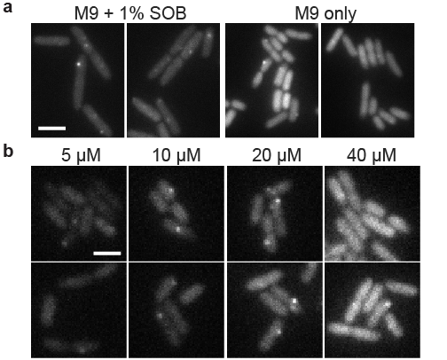
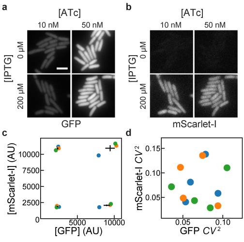

João Silva XXXX-XXXX-XXXX-XXXX Instituto de Tecnologia Química e Biológica António Xavier, Universidade Nova de Lisboa, Oeiras, Portugal
Soraia Lopes XXXX-XXXX-XXXX-XXXX Instituto de Tecnologia Química e Biológica António Xavier, Universidade Nova de Lisboa, Oeiras, Portugal
Diogo Grilo XXXX-XXXX-XXXX-XXXX Instituto de Tecnologia Química e Biológica António Xavier, Universidade Nova de Lisboa, Oeiras, Portugal
Zach Hensel 0000-0002-4348-6229 · zach-hensel · alchemytoday Instituto de Tecnologia Química e Biológica António Xavier, Universidade Nova de Lisboa, Oeiras, Portugal · Funded by Project LISBOA-01-0145-FEDER-007660 (Microbiologia Molecular, Estrutural e Celular) Correspondence: zach.hensel@itqb.unl.pt
Abstract
Some microbiology experiments and biotechnology applications can be improved if it is possible to tune the expression of two different genes at the same time with cell-to-cell variation at or below the level of genes constitutively expressed from the chromosome (the “extrinsic noise limit”). This was recently achieved for a single gene by exploiting negative autoregulation by the tetracycline repressor (TetR) and bicistronic gene expression to reduce gene expression noise. We report new plasmids that use the same principles to achieve simultaneous, low-noise expression for two genes. The TetR system was moved to a compatible plasmid backbone, and a system based on the lactose repressor (LacI) was found to also exhibit gene expression noise below the extrinsic noise limit. We characterize gene expression mean and noise across the range of induction levels for these plasmids, apply the LacI system to tune expression for single-molecule mRNA detection in two different growth conditions, and show that two plasmids can be co-transformed to independently tune expression of two different genes.
Introduction
We recently reported the development of a plasmid-based gene-expression system in which a gene of interest is expressed bicistronically with the tetracycline repressor (TetR) [1]. Using this gene expression system, cell-to-cell variation is below the “extrinsic noise limit” (coefficient of variation squared of protein concentration, \(CV^2 \approx 0.1\)) observed for genes expressed from the chromosome [2]. When TetR and GFP are expressed bicistronically, GFP induction and gene expression noise is similar to that observed for a TetR-GFP fusion protein with autoregulation [3]. Compared to induction of gene expression under the control of a constitutively expressed transcriptional repressor, the inducer dose-response is relatively linearized, and gene expression noise is much lower at intermediate induction levels [1].
Our recent experiments in mRNA detection and other single-molecule experiments in living E. coli cells sometimes require the tunable expression of two different genes, both with low noise levels. For example, adopting a recently reported mRNA detection systems based on local enrichment of fluorescent RNA-binding proteins [4] for use in E. coli requires lower noise in protein production relative to the same system in S. cerevisiae, because of a smaller cell volume and the inability to sequester unbound protein in the nucleus. At the same time, tunable expression with low noise in the level of the target RNA is desired to make it possible to characterize the accuracy of RNA detection over a range of RNA levels. We hoped that expressing both the target RNA and RNA-binding fluorescent protein on two plasmids that could be tuned independently would simplify and accelerate development of new RNA-detection systems in E. coli. Achieving this was a three-step process: first, characterizing the TetR-based system on a compatible plasmid backbone; second, establishing an orthogonal, low-noise expression system based on the lac repressor (LacI); and third, showing that the two systems can be tuned independently.
Methods
Strain construction
All plasmids were constructed using isothermal assembly [5] of fragments generated by PCR or double stranded DNA synthesis (IDT, Coralville) and transformed Top10 E. coli cells (5-1600-020, IBA Life Sciences, Göttingen). Transformants were screened by colony PCR and verified by sequencing. Purified plasmids were transformed into E. coli strain MG1655 by growing 3 mL of culture in SOB media at 30 °C to OD600=0.4, washing twice with 1 mL ice-cold water, resuspending in 40 µL water, electroporating 1-–10 ng plasmid with the EC1 setting of a Micropulser (Bio-Rad Laboratories, Hercules), and recovering for 1 hour at 37 °C in SOC media before plating on selective LB-agar.
To generate pJS101 with a compatible backbone, plasmid pZH509 [1] was used as a template to amplify the bicistronic regulatory construct including the PLtetO-1 promoter [6], GFPmut2 [7], tn10 TetR [8] and rrnB T1 transcription terminator [9]. This was assembled by isothermal assembly with the backbone from pGB2 [10] with the pSC101 origin of replication and spectinomycin resistance to generate plasmid pJS101. Plasmid pJS102 was generated by 3-fragment isothermal assembly. Plasmid pZH509 was used as a template both for the vector backbone and for GFPmut2, with non-homologous extensions added to PCR primers to generate the PLlacO-1 promoter. LacI was amplified from E. coli MG1655 by colony PCR.
The test strain for mRNA imaging, ZHX99, was constructed similar to ZHX222 in recent work [11]. Similarly, in ZHX99 a construct in which a fusion protein of mVenus and Cro is expressed from the bacteriophage λ promoter PR was integrated into the chromosome to replace the lac operon in MG1655 [12]. ZHX99 differs from ZHX222 in three ways. First, the PR promoter was weakened by site-directed mutagenesis to produce a strain with lower mRNA levels. Second, a very strong ribosome binding site was added (RBS #136 [13]). Lastly, 24 tandem repeats of the recognition sequence for the PP7 coat protein were inserted between the open reading frame and transcription terminator (amplified by PCR from pDZ251 [14]). The pZH713 plasmid for mRNA detection was constructed by replacing GFPmut2 in pJS102 with a fusion protein of SYFP2 (amplified from a plasmid [15]) and the PP7 coat protein (PP7cp) (generated by codon optimization and DNA synthesis based on previously reported sequences [16]). Additionally, in pZH713 the PP7cp-SYFP2 fusion protein is translated from the weak ribosome binding site from pZH511 [17].
To test independent induction of two genes, GFPmut2 in pJS102 was replaced by mScarlet-I (amplified from a plasmid [18]) to make pDG101. Plasmids were co-transformed into MG1655 by electroporation following the above protocol, except with 1 µL each undiluted plasmid (~20–-40 ng) and selecting on LB-agar plates with both spectinomycin and carbenicillin. Sequence maps are included in supplementary file and plasmids useful for constructing additionally 2-gene expression systems (pJS101 and pJS102, Table 1) are available at AddGene (deposit numbers 118280 and 118281) and have been verified by NGS [19].
Characterization of GFP expression by flow cytometry
All flow cytometry experiment were repeated 3 times on different days and used plasmids transformed by electroporation into E. coli MG1655. Cultures were grown overnight at 30 °C from LB-agar plates supplemented with carbenicillin or spectinomycin (both at 50 \(\frac{\mu g}{mL}\)) in 1 mL EZ Rich Defined Medium (M2105, Teknova, Hollister) supplemented with the same antibiotics. Cells were reinoculated 1:400 in 1 mL of the same media supplemented with Isopropyl β-D-1-thiogalactopyranoside (IPTG, at concentrations of 0, 2, 4.5, 10, 22.4, 50, 111.8, 250, 559, and 1250 µM) or anhydrotetrycline (ATc, at concentrations of 1, 5, 25, and 125 nM) as indicated and grown at 30 °C for 4–4.5 hours until reaching an optical density at 600 nm of 0.2–0.3. Next, 10 µL of cells were added to 1 mL of PBS at pH 7.4 and examined by flow cytometry.
Flow cytometry data was collected on an S3e cell sorter (Bio-Rad, Hercules) using a target flow rate of 2,000 counts/s and collecting 30,000 counts for each sample. A 488-nm laser line was used for excitation and its maximum power setting with amplification settings of 450 (forward scattering, FSC), 350 (side scattering, SSC), and 900 (FL1, 525/30 nm). The cell sorter is calibrated daily for a linear response to sample fluorescence intensity. Acquisition was triggered by forward scattering with a threshold of 3. Data was exported as an FCS file and imported into a custom Python script using FlowCal [20]. Following previous methods [1], one third of samples were selected based on proximity to the peak of FSC-AREA and SSC-HEIGHT in a 2D histogram using the density2d method in FlowCal. The FL1-AREA measurements were used to estimate the mean and variance of GFP distributions for all samples. This was done by estimating the probability density functions in bins distributed equally in logarithmic space and fitting by least squares minimization to a gamma function. We found that this method reduced the influence of low-FL1-AREA events that escaped other gating steps, and which had frequencies that varied for different samples and days (Figure S1). In all plots, the mean fluorescence of a strain harboring a similar plasmid, pZH501, that does not encode a fluorescent protein, was subtracted [1].
We note that side scattering was weakly correlated with fluorescence, and thus with cell size, so this gating modestly reduces measured noise in FL1-AREA. However, we are comparing to an “extrinsic noise limit” determined from measurements of cell fluorescence divided by cell area [2], which effectively does the same thing. In practice, we observed slightly lower noise measurements for GFP concentration in fluorescence microscopy images compared to total GFP fluorescence in the gated flow cytometry sample for similarly induced strains. This difference was more significant for very-low-expression conditions, and noise in conditions where GFP fluorescence distributions significantly overlap with ungated background events (GFP intensity less than 104 in Figure S1) is somewhat overestimated. The script for data analysis as well as all raw FCS data is available in Supplementary File S2 and utilized modules from SciPy, NumPy, Matplotlib, and Pandas.
Microscopy
For microscopy, cells were grown similarly to the protocol for flow cytometry. Differences for mRNA imaging were that cells were grown in M9 media supplemented with 1X MEM Amino Acids (M9A) or M9A additionally supplemented with 1% SOB media. Cells were imaged on agarose gel pads (3% BP165-25, Fisher Bio-Reagents) diluted in M9A (for mRNA imaging) or PBS (for two-plasmid imaging). For mRNA imaging, the microscope sample chamber was maintained at 30 °C. All imaging was done on a Leica DMI6000 inverted microscope using illumination from a Leica EL6000 source, fluorescence filter cubes (Leica GFP ET, a custom filter set with Semrock filters FF01-561/13, FF02-616/73, and DI02-R561, or the Semrock LF514-B filter set), a 100x/1.46 a-plan apochromat oil immersion objective, and an Evolve 512 EM-CCD camera (Photometrics). Images were prepared using Fiji [21], with linear scaling and maintaining minimum and maximum intensity values for all comparable images.
SM-FISH
Cells were grown in overnight cultures at 32 °C in M9 minimal media supplemented with 1% SOB media, 50 µg/mL carbenicillin or 50 µg/mL spectinomycin. The next day, cells were diluted 1:100 or more (if multiple experiments were to be done sequentially over several hours) in the same media supplemented with anhydrotetracycline. In this growth condition, doubling time was approximately 30 minutes for MG1655 strains harboring these plasmids.
Microscopy
Microscopy methods and microscopy data analysis methods
Flow cytometry
Flow cytometry methods and data analysis methods
Results
Moving bicistronic autoregulatory construct to a compatible plasmid backbone
The first step in creating a low-noise system for tuning expression of two genes is to establish that a previously characterized bicistronic autoregulatory circuit functions well in a compatible plasmid backbone. In this expression system, GFP and TetR are expressed bicistronically from the TetR-repressible promoter PLtetO-1 and expression is induced by the addition of ATc [17]. This system was shown to have low noise and a linearized dose response compared to a system in which TetR is constitutively expressed. We moved the system from a plasmid with a p15A replicon conferring ampicillin resistance to a lower-copy-number plasmid with a pSC101 replicon conferring spectinomycin resistance [10]. The p15A and pSC101 replicons have been used together in multiplasmid systems [22].
GFP expression mean and noise were characterized from low to high levels of induction by flow cytometry. Figure 1 shows that pJS101 induces at similar ATc concentrations as pZH509, with the change to the lower-copy pSC101 backbone resulting in a 58% drop in mean expression levels at a wide range of ATc concentrations. For a similar expression system in the absence of autoregulated TetR expression, moving the PLtetO-1 promoter from a p15A to a pSC101 backbone resulted in an 87% drop in expression [6]. A smaller change is expected in our experiment since negative autoregulation will provide dosage compensation, just autoregulation can reduce noise in plasmid copy number [23,24,25].
[23] dublanche copy number variation [24] becskei serrano autoregulation noise [25] paulsson summing up the noise [6] lutz laco1 etc
Figure 1:Influence of plasmid backbone on induction of TetR expression system. Mean single-cell GFP fluorescence for pZH509 (blue) and pJS101 (orange) plasmids as a function of ATc concentration. Error bars are 1 standard error.
Alternative regulatory constructs with LacI replacing TetR
We hypothesized that replacing PLtetO-1 with the inducible promoter PLlacO-1 with similar characteristics [6] and replacing TetR with LacI might result in a similarly useful expression system that could be tuned independently. However, regulatory parameters for TetR and LacI vary wildly, with …
Note that MG1655 has the full lac operon, and that we have seen that the system works well in the presence and absence of the lac operon (MG1655/pJS102 vs ZHX99/pZH713)
Figure 2:Characterizing mean expression levels and noise for different gene expression systems. (a) pJS102 mean induction (b) mean vs noise for all strains.
Using the new induction system for detection of single mRNA in living E. coli
Figure 3:Using IPTG to tune expression of a fluorescent RNA-binding protein for single mRNA detection in different growth conditions. (a) 100 µM IPTG works well in rich media conditions, but has too high an expression level to see single mRNA spots above background in minimal media conditions. (b) Using the pJS102 expression system, an optimal range of 10–20 µM IPTG is quickly identified for single mRNA detection in minimal media.
Independent, tunable expression of two genes
Aggregation of mRNA-binding proteins from RNA bacteriophages makes it difficult to use fluorescent fusion proteins to detect single mRNAs [26]. We hypothesized that …
[27] mNeonGreen [28] mScarlet-I [29] The Pf3 coat protein is a small membrane-spanning protein with a cytoplasm-facing C terminus.
Figure 4:Using IPTG to tune expression of a fluorescent RNA-binding protein for single mRNA detection in different growth conditions. (a) 100 µM IPTG works well in rich media conditions, but has too high an expression level to see single mRNA spots above background in minimal media conditions. (b) Using the pJS102 expression system, an optimal range of 10–20 µM IPTG is quickly identified for single mRNA detection in minimal media.
Discussion
We expect that the expression plasmids introduced here will be widely useful for applications in molecular biology. Adopting these systems for use with any
Possible to improve pJS23103 with somewhat stronger promoter?
Possible to extend to 3 genes? Possible using additional repressor, pMB1 origin of replication, and different antibiotic selection.
Why this would it be useful to do this for two different genes at the same time? Example for stoichiometric production of a protein complex Expressing genes at their native levels … e.g. for generating chromosome deletions
Author contributions
JS, DG and ZH designed experiments and performed experiments. JS, SL, DG, and ZH performed molecular cloning. ZH and JS analyzed data and wrote the paper. JS, SL, DG and ZH edited and approved the manuscript. ZH supervised the project.
Acknowledgments
This work was financially supported by: Project LISBOA-01-0145-FEDER-007660 (Microbiologia Molecular, Estrutural e Celular) funded by FEDER funds through COMPETE2020—Programa Operacional Competitividade e Internacionalização (POCI), by national funds through FCT—Fundação para a Ciência e a Tecnologia, and through a joint research agreement with the Okinawa Institute of Science and Technology (OIST). This manuscript was composed and edited using Manubot [30].
References
1. A plasmid-based Escherichia coli gene expression system with cell-to-cell variation below the extrinsic noise limit
Zach Hensel PLOS ONE (2017-10-30) https://doi.org/10.1371/journal.pone.0187259
2. Quantifying E. coli Proteome and Transcriptome with Single-Molecule Sensitivity in Single Cells
Y. Taniguchi, P. J. Choi, G.-W. Li, H. Chen, M. Babu, J. Hearn, A. Emili, X. S. Xie Science (2010-07-29) https://doi.org/10.1126/science.1188308
3. Noise in transcription negative feedback loops: simulation and experimental analysis
Yann Dublanche, Konstantinos Michalodimitrakis, Nico Kümmerer, Mathilde Foglierini, Luis Serrano Molecular Systems Biology (2006-08-01) https://doi.org/10.1038/msb4100081
4. An improved MS2 system for accurate reporting of the mRNA life cycle.
Evelina Tutucci, Maria Vera, Jeetayu Biswas, Jennifer Garcia, Roy Parker, Robert H Singer Nature methods (2017-11-13) https://www.ncbi.nlm.nih.gov/pubmed/29131164
5. Enzymatic assembly of DNA molecules up to several hundred kilobases
Daniel G Gibson, Lei Young, Ray-Yuan Chuang, J Craig Venter, Clyde A Hutchison, Hamilton O Smith Nature Methods (2009-04-12) https://doi.org/10.1038/nmeth.1318
6. Independent and tight regulation of transcriptional units in Escherichia coli via the LacR/O, the TetR/O and AraC/I1-I2 regulatory elements.
R Lutz, H Bujard Nucleic acids research (1997-03-15) https://www.ncbi.nlm.nih.gov/pubmed/9092630
8. Nucleotide sequence of the repressor gene of the TN10 tetracycline resistance determinant
Kathleen Postle, Toai T. Nguyen, Kevin P. Bertrand Nucleic Acids Research (1984) https://doi.org/10.1093/nar/12.12.4849
9. Intrinsic termination of T7 RNA polymerase mediated by either RNA or DNA.
L Hartvig, J Christiansen The EMBO journal (1996-09-02) https://www.ncbi.nlm.nih.gov/pubmed/8887568
10. A pSC101-derived plasmid which shows no sequence homology to other commonly used cloning vectors.
G Churchward, D Belin, Y Nagamine Gene (1984-11) https://www.ncbi.nlm.nih.gov/pubmed/6098521
11. Cell-cycle-synchronized, oscillatory expression of a negatively autoregulated gene in E. coli
Zach Hensel, Tatiana T. Marquez-Lago arXiv (2015-06-29) https://arxiv.org/abs/1506.08596v1
12. One-step inactivation of chromosomal genes in Escherichia coli K-12 using PCR products.
KA Datsenko, BL Wanner Proceedings of the National Academy of Sciences of the United States of America (2000-06-06) https://www.ncbi.nlm.nih.gov/pubmed/10829079
13. Translation rate is controlled by coupled trade-offs between site accessibility, selective RNA unfolding and sliding at upstream standby sites.
Amin Espah Borujeni, Anirudh S Channarasappa, Howard M Salis Nucleic acids research (2013-11-14) https://www.ncbi.nlm.nih.gov/pubmed/24234441
14. Real-time observation of transcription initiation and elongation on an endogenous yeast gene.
Daniel R Larson, Daniel Zenklusen, Bin Wu, Jeffrey A Chao, Robert H Singer Science (New York, N.Y.) (2011-04-22) https://www.ncbi.nlm.nih.gov/pubmed/21512033
15. Cyan and yellow super fluorescent proteins with improved brightness, protein folding, and FRET Förster radius.
Gert-Jan Kremers, Joachim Goedhart, Erik B van Munster, Theodorus WJ Gadella Biochemistry (2006-05-30) https://www.ncbi.nlm.nih.gov/pubmed/16716067
16. Fluorescence fluctuation spectroscopy enables quantitative imaging of single mRNAs in living cells.
Bin Wu, Jeffrey A Chao, Robert H Singer Biophysical journal (2012-06-19) https://www.ncbi.nlm.nih.gov/pubmed/22735544
17. A plasmid-based Escherichia coli gene expression system with cell-to-cell variation below the extrinsic noise limit.
Zach Hensel PloS one (2017-10-30) https://www.ncbi.nlm.nih.gov/pubmed/29084263
18. Characterization of a spectrally diverse set of fluorescent proteins as FRET acceptors for mTurquoise2.
Marieke Mastop, Daphne S Bindels, Nathan C Shaner, Marten Postma, Theodorus WJ Gadella, Joachim Goedhart Scientific reports (2017-09-20) https://www.ncbi.nlm.nih.gov/pubmed/28931898
20. FlowCal: A User-Friendly, Open Source Software Tool for Automatically Converting Flow Cytometry Data from Arbitrary to Calibrated Units.
Sebastian M Castillo-Hair, John T Sexton, Brian P Landry, Evan J Olson, Oleg A Igoshin, Jeffrey J Tabor ACS synthetic biology (2016-05-12) https://www.ncbi.nlm.nih.gov/pubmed/27110723
21. Fiji: an open-source platform for biological-image analysis.
Johannes Schindelin, Ignacio Arganda-Carreras, Erwin Frise, Verena Kaynig, Mark Longair, Tobias Pietzsch, Stephan Preibisch, Curtis Rueden, Stephan Saalfeld, Benjamin Schmid, … Albert Cardona Nature methods (2012-06-28) https://www.ncbi.nlm.nih.gov/pubmed/22743772
22. BglBrick vectors and datasheets: A synthetic biology platform for gene expression.
Taek Soon Lee, Rachel A Krupa, Fuzhong Zhang, Meghdad Hajimorad, William J Holtz, Nilu Prasad, Sung Kuk Lee, Jay D Keasling Journal of biological engineering (2011-09-20) https://www.ncbi.nlm.nih.gov/pubmed/21933410
23. Noise in transcription negative feedback loops: simulation and experimental analysis.
Yann Dublanche, Konstantinos Michalodimitrakis, Nico Kümmerer, Mathilde Foglierini, Luis Serrano Molecular systems biology (2006-08-01) https://www.ncbi.nlm.nih.gov/pubmed/16883354
26. Spatial organization of the flow of genetic information in bacteria
Paula Montero Llopis, Audrey F. Jackson, Oleksii Sliusarenko, Ivan Surovtsev, Jennifer Heinritz, Thierry Emonet, Christine Jacobs-Wagner Nature (2010-06-20) https://doi.org/10.1038/nature09152
27. A bright monomeric green fluorescent protein derived from Branchiostoma lanceolatum
Nathan C Shaner, Gerard G Lambert, Andrew Chammas, Yuhui Ni, Paula J Cranfill, Michelle A Baird, Brittney R Sell, John R Allen, Richard N Day, Maria Israelsson, … Jiwu Wang Nature Methods (2013-03-24) https://doi.org/10.1038/nmeth.2413
28. mScarlet: a bright monomeric red fluorescent protein for cellular imaging
Daphne S Bindels, Lindsay Haarbosch, Laura van Weeren, Marten Postma, Katrin E Wiese, Marieke Mastop, Sylvain Aumonier, Guillaume Gotthard, Antoine Royant, Mark A Hink, Theodorus WJ Gadella Nature Methods (2016-11-21) https://doi.org/10.1038/nmeth.4074
29. Negatively charged amino acid residues play an active role in orienting the Sec-independent Pf3 coat protein in theEscherichia coliinner membrane
Dorothee Kiefer, Xintong Hu, Ross Dalbey, Andreas Kuhn The EMBO Journal (1997-05-01) https://doi.org/10.1093/emboj/16.9.2197
30. Open collaborative writing with Manubot
Daniel S. Himmelstein, David R. Slochower, Venkat S. Malladi, Casey S. Greene, Anthony Gitter Manubot Preprint (2018) https://greenelab.github.io/meta-review/
Supplementary Material
Figure S1:Reproducibility of low-noise expression in 3 independent experiments. Probability densities for each flow cytometry sample were calculated by kernel density estimates for the negative control plasmid pZH501 (orange), ZH509 (blue), pJS101 (green), and pJS102 (red) with fluorescence levels monotonically increasing with concentration of ATc (1, 5, 25, 125 nM) or IPTG (0, 2, 4.5, 10, 22.5, 50, 111.8, 250, 559, 1250). Distributions were fit by least squares regression to a gamma function (black dashed lines) to estimate sample mean and variance while minimizing the influence of non-fluorescent background events, which varied in frequency for different days and samples.
Supplementary File S2: Raw flow cytometry data, Python scripts required to reproduce Figures 1 and 2, DNA sequences, and explanatory text files are available as a compressed archive at Zenodo.


![Figure S1: Reproducibility of low-noise expression in 3 independent experiments. Probability densities for each flow cytometry sample were calculated by kernel density estimates for the negative control plasmid pZH501 (orange), ZH509 (blue), pJS101 (green), and pJS102 (red) with fluorescence levels monotonically increasing with concentration of ATc (1, 5, 25, 125 nM) or IPTG (0, 2, 4.5, 10, 22.5, 50, 111.8, 250, 559, 1250). Distributions were fit by least squares regression to a gamma function (black dashed lines) to estimate sample mean and variance while minimizing the influence of non-fluorescent background events, which varied in frequency for different days and samples.](images/FigureS1_gammaFits.png)